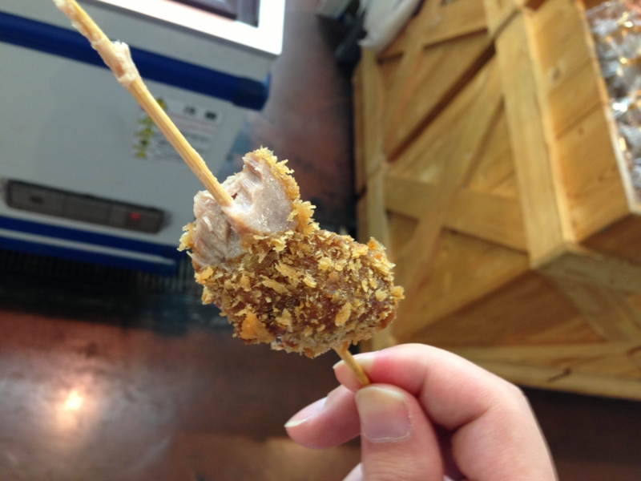
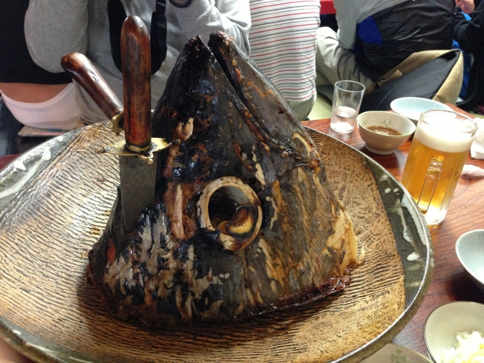

三浦半島でマグロを堪能してきた
公開日：

Y 氏が虎○門病院へ入院し、白衣の天使と戯れること幾星霜。やっとこさそれにも飽きて退院したらしいので、@subsfn の企画の下、快気祝いを兼ねて三浦半島に来駕してやった。途中、港でマグロ串を買い食いしたりしつつ、お昼時に予約済みのお店へ。
くろば亭
ちょっと早く着きすぎたので、おつまみや……

お刺身をアテにビールを愉しむ。@subsfn がお酒飲めなくてよかった……じゃなくて、毎度さっさと酔っぱらって、お前にばかり運転させてすまん。

今回のメインはマグロの兜焼き（？）。これでも少人数向けの小さいものなのだけれど、そのデカさに圧倒される。

するとそこへおっさんが現れて、鮮やかな手さばきであっという間にバラバラになった*1。マグロを供養するために謎の念仏・祈祷もしていたけど、なんかハゲ頭に圧倒されて写真に収めるのを忘れていた。
あとは、マグロのカルビ焼きだの、カサゴの天ぷらのあんかけなども堪能。途中、Y 氏が食べ過ぎてダウンしたけど、つつがなく昼食は終了しました。
ご請求、一人一万円超えた／(＾o＾)＼
ホテル京急油壺観潮荘
メシの後は、海洋深層水とやらの温泉でのんびり、適当に駄弁ってた。いい天気、ほどよい気温、海が見えていい感じ。
さいごに、@subsfn 氏、第二子の誕生おめでとう！ カードキャプターの未来に幸多からんことを。
*1:この様子は Facebook にアップロードしている。 https://www.facebook.com/photo.php?v=10200121462054071